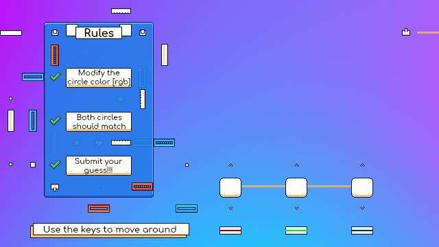
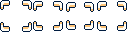
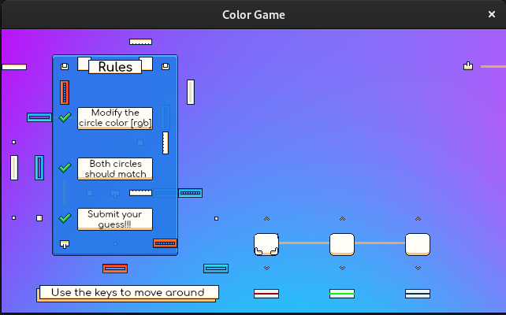
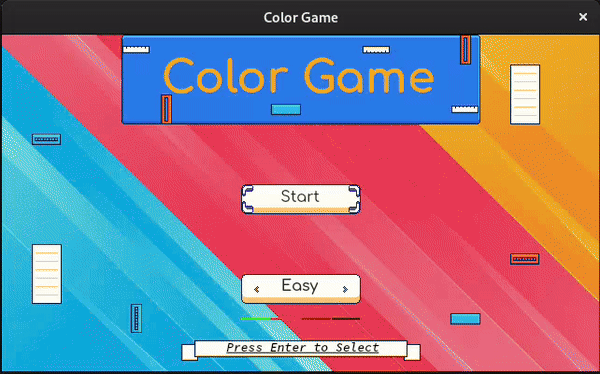
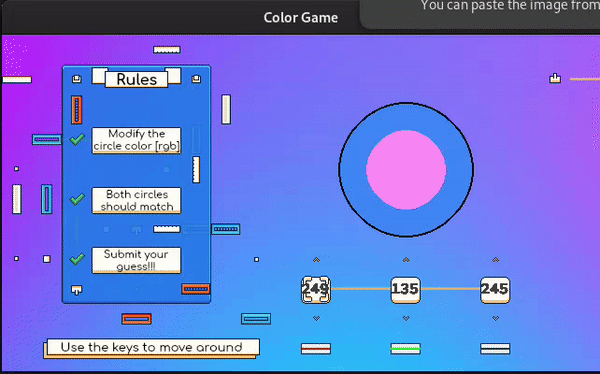
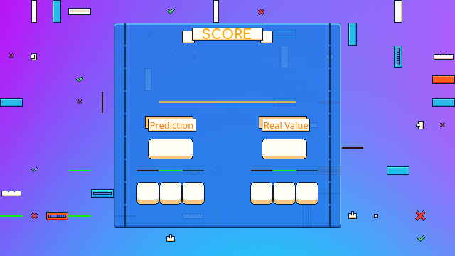
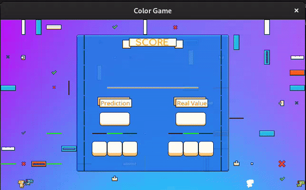
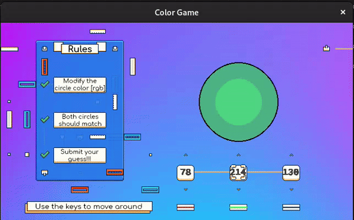
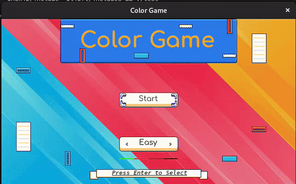
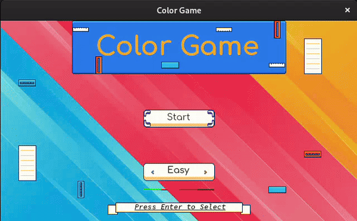

HOME / BLOG / MLX42 - Game Development
MLX42 - Game Development
over 2 years
2024 02
I will guide you through some game dynamics. This is the continuation of MLX42 - Intro
A few important points:
- We will create the game finally.
- We will recycle the foreground to draw the game dynamics.
- We must implement another animation for the color selections, this is similar to the previous one but it's smaller, it's 32x32px.
The game background and the animation are the following:


Let's modify a little our game structure:
#define COLOR_SELECTION_LEN 3
enum color_selection {
RED,
GREEN,
BLUE
};
typedef struct s_color_game {
mlx_t * mlx;
mlx_image_t * menu_bg;
mlx_image_t * game_bg;
mlx_image_t * foreground;
mlx_image_t * difficulty_imgs[DIFFICULTY_LEN];
t_animation * select_animation;
t_animation * small_select_animation;
enum menu_selection menu_selection;
enum game_status game_status;
enum game_difficulty game_difficulty;
enum color_selection color_selection;
int selected_colors[COLOR_SELECTION_LEN];
} t_color_game;And on the init_game function you should also modify accordingly:
init_game() {
...
t_animation* small_anim;
// Sprite & Animation (small select)
sprite = new_sprite("./images/small_select_sprite_sheet.png", mlx);
small_anim = slice_sprite(&sprite, (sprite_slice){0, 0, 32, 32, 0, 0}, false, 4, 120);
destroy_sprite(&sprite);
...
return (t_color_game){mlx, img, img2, foreground_img,
{difficulty_imgs[0], difficulty_imgs[1], difficulty_imgs[2]},
anim, small_anim, SELECT_PLAY, MENU, EASY, RED,
{255, 255, 255}};
}And of course, don't forget to free the animation on the main function:
ft_lstclear(&cg.small_select_animation->frames, bait); free(cg.small_select_animation);
Now we can implement the selection in the foreground just like we did with the menu!
Let's get our hands dirty with animations! :D
So on the update function let's implement the animation, we will use static coordinates to place the animation in the correct spot!
Let's get our hands dirty with animations! :D
So on the update function let's implement the animation, we will use static coordinates to place the animation in the correct spot!
static int color_selection_coords[COLOR_SELECTION_LEN][2] = {{320, 256}, {416, 256}, {512, 256}};
...
if (cg->game_status == PLAYING) {
mlx_image_t * frame = (mlx_image_t *)ft_lstget(cg->small_select_animation->frames, cg->small_select_animation->current_frame_num)->content;
if (!frame)
error();
put_img_to_img(cg->foreground, frame,
color_selection_coords[cg->color_selection][0],
color_selection_coords[cg->color_selection][1]);
update_animation(cg->small_select_animation, cg->mlx->delta_time);
} else if (cg->game_status == MENU) {
...Now we can implement a key hook, to change the color selection whenever the user press the left or right keys!
void key_update(mlx_key_data_t keydata, void* ptr) {
t_color_game* cg = (t_color_game*)ptr;
if (cg->game_status == PLAYING && keydata.action == MLX_PRESS) {
if (keydata.key == MLX_KEY_LEFT) {
cg->color_selection--;
if (cg->color_selection == -1)
cg->color_selection = COLOR_SELECTION_LEN - 1;
} else if (keydata.key == MLX_KEY_RIGHT) {
cg->color_selection++;
cg->color_selection %= COLOR_SELECTION_LEN;
}
} else if (cg->game_status == MENU && keydata.action == MLX_RELEASE) {
...Now your game should look something like this:
Colors
Now we are going to implement the colors, you might have had noticed, I added a member selected_colors[COLOR_SELECTION_LEN] member to our game.
This is a data array which will hold the user selections, it is initialized to white {255, 255, 255}
The user will need to control each int to generate a color similar to the color of the game in order to win.
When the user is playing, and press (or holds) the up or down key, the selected color should be affected, so we can implement that in the key hook!
void key_update(mlx_key_data_t keydata, void* ptr) {
t_color_game* cg = (t_color_game*)ptr;
if (cg->game_status == PLAYING && (keydata.action == MLX_REPEAT || keydata.action == MLX_PRESS)) {
if (keydata.key == MLX_KEY_DOWN) {
if (cg->selected_colors[cg->color_selection] > 0)
cg->selected_colors[cg->color_selection]--;
} else if (keydata.key == MLX_KEY_UP) {
if (cg->selected_colors[cg->color_selection] < 255)
cg->selected_colors[cg->color_selection]++;
}
}
if (cg->game_status == PLAYING && keydata.action == MLX_PRESS) {
if (keydata.key == MLX_KEY_LEFT) {
cg->color_selection--;
...It's very important to realize that it's an independent if, the color selection should not affect the color value (it's not an if - else if).
We have to represent somehow the amount of each color (Red, Green & Blue).
There are many ways you could do this, we could even try to a custom font and put the number which is represented... but it's tooooo complicated.
So we can just use mlx_put_string this is a function from MLX42!
The function is very basic and not super handful, mainly because we can't choose to put a string to an image, the library creates an extra image with the text. The image is just big enough to hold the text.
This is very inconvenient, but we can create some code make it work.
So we should draw three images one for each value. Let's do that then:
And because we have the color values as numbers, we will need to use our ft_itoa function to convert the number to a string which we can represent!
Let's modify our game structure, we will need 3 font images:
typedef struct s_color_game {
mlx_t * mlx;
mlx_image_t * menu_bg;
mlx_image_t * game_bg;
mlx_image_t * foreground;
mlx_image_t * difficulty_imgs[DIFFICULTY_LEN];
mlx_image_t * font_img[COLOR_SELECTION_LEN];
t_animation * select_animation;
t_animation * small_select_animation;
enum menu_selection menu_selection;
enum game_status game_status;
enum game_difficulty game_difficulty;
enum color_selection color_selection;
int selected_colors[COLOR_SELECTION_LEN];
} t_color_game;As usual, also modify the init_game function and initialize each member to NULL
...
return (t_color_game){mlx, img, img2, foreground_img,
{difficulty_imgs[0], difficulty_imgs[1], difficulty_imgs[2]},
{0}, anim, small_anim, SELECT_PLAY, MENU, EASY, RED,
{255, 255, 255}};
}Now let's go to the update function to draw each color selection with its value!
We had a condition for when we are playing, where we draw the playing background. After this we will need to create an image with the text.
In total we have 3 colors, for each of the colors we will need to draw an image. So the code needs to be inside a loop.
The pseudo-code could look something like this:
COLORS_LEN 3
for n in COLOR_LEN ---> Iterate through each color (Red, Green & Blue)
color_amount = get_color_amoun(n) ---> Get the color value [0..255]
color_str = num_to_str(color_amount) ---> Get number as string
img = generate_string_image(color_str) ---> Generate an image from string
copy_image_to_image(foregroun, img) ---> Put the image to the foreground
delete_img(img) ---> Delete the image
void update(void * ptr) {
...
if (cg->game_status == PLAYING) {
...
for (int n = 0; n < COLOR_SELECTION_LEN; n++) {
char * num_str = ft_itoa(cg->selected_colors[n]);
cg->font_imgs[n] = mlx_put_string(cg->mlx, num_str, 0, 0);
free(num_str);
put_img_to_img(cg->foreground, cg->font_imgs[n], color_selection_coords[n][0], color_selection_coords[n][1]);
mlx_delete_image(cg->mlx, cg->font_imgs[n]);
}
} else if (cg->game_status == MENU) {
...If we run the code as it is, you will realize there are two problems, let's look at the picture from the code generated:

Font Color
The mlx_put_string will generate white text, which will be problematic because our background is also white, we need to change the font color.
We can change the color very easily, before we copy the font image to the foreground, let's change all the pixels which were drawn to another color!
I will use the color (#424242)
for (int i = 0; i < cg->font_imgs[n]->width; i++) {
for (int j = 0; j < cg->font_imgs[n]->height; j++) {
if (mlx_get_pixel(cg->font_imgs[n], i, j) != 0)
mlx_put_pixel(cg->font_imgs[n], i, j, 0x424242FF);
}
}Now you will realize the color is gray instead of white, but still, the number is not alight at the center and it covers the animation.
We can just move the animation logic bellow in order to draw the animation on top of the text.
In order to center the string, we can use a padding for the horizontal and a padding for the vertical.
I recommend a fixed padding of + 5 pixels for the vertical (y) and for the horizontal padding it would be something like this:
+9px if amount < 10, +5px if amount < 100 & +0 pixels else.
The code would look something like this:
void update(void * ptr) {
static int menu_selection_coords[SELECTION_LEN][2] = {{256, 160}, {256, 256}};
static int color_selection_coords[COLOR_SELECTION_LEN][2] = {{320, 256}, {416, 256}, {512, 256}};
t_color_game* cg = (t_color_game*)ptr;
memset(cg->foreground->pixels, 0xFF000000, cg->foreground->width * cg->foreground->height * BPP);
if (cg->game_status == PLAYING) {
// Put the number (amount) of each color selection
for (int n = 0; n < COLOR_SELECTION_LEN; n++) {
char * num_str = ft_itoa(cg->selected_colors[n]);
int padding_left = 0;
if (cg->selected_colors[n] < 100)
padding_left += 6;
if (cg->selected_colors[n] < 9)
padding_left += 5;
cg->font_imgs[n] = mlx_put_string(cg->mlx, num_str, 0, 0);
free(num_str);
for (int i = 0; i < cg->font_imgs[n]->width; i++) {
for (int j = 0; j < cg->font_imgs[n]->height; j++) {
if (mlx_get_pixel(cg->font_imgs[n], i, j) != 0)
mlx_put_pixel(cg->font_imgs[n], i, j, 0x424242FF);
}
}
put_img_to_img(cg->foreground, cg->font_imgs[n], color_selection_coords[n][0] + padding_left, color_selection_coords[n][1] + 5);
mlx_delete_image(cg->mlx, cg->font_imgs[n]);
}
// Draw the color selection animation
mlx_image_t * frame = (mlx_image_t *)ft_lstget(cg->small_select_animation->frames, cg->small_select_animation->current_frame_num)->content;
if (!frame)
error();
put_img_to_img(cg->foreground, frame,
color_selection_coords[cg->color_selection][0],
color_selection_coords[cg->color_selection][1]);
update_animation(cg->small_select_animation, cg->mlx->delta_time);
} else if (cg->game_status == MENU) {
...
}
Now it's time to put the color that the user is generating to the screen, I decided to use a set of circles to do this. The result will look something like this:
For the example I am using a fixed color: rgb(66, 135, 245) or #4287f5
To win you would need to input a color that is very similar to that one!
For the example I am using a fixed color: rgb(66, 135, 245) or #4287f5
To win you would need to input a color that is very similar to that one!

In this tutorial I won't be explaining how the draw_circle function works but you can read about it here
There are many ways to draw a circle, in this case I choose to implement the Bresenham`s Algorithm (Mid Point Circle Algo).
Basically for each iteration you choose 8 points in the circle and draw a horizontal line between each pair of points. It really is not very complicated.
This might be an overkill but I also implemented a function to draw a line, using once again... Bresenham's line algorithm (yes by the same guy, Jack Bresenham, he's very cool guy)
draw_utils.c
#include <stdlib.h>
#include "MLX42/MLX42.h"
void draw_line(mlx_image_t * img, int x0, int y0, int x1, int y1, uint32_t color) {
int dx = abs(x1-x0), sx = x0<x1 ? 1 : -1;
int dy = abs(y1-y0), sy = y0<y1 ? 1 : -1;
int err = (dx>dy ? dx : -dy)/2, e2;
for(;;){
mlx_put_pixel(img, x0, y0, color);
if (x0==x1 && y0==y1)
break;
e2 = err;
if (e2 >-dx) {
err -= dy;
x0 += sx;
}
if (e2 < dy) {
err += dx;
y0 += sy;
}
}
}
static void draw_circle_coords(mlx_image_t * img, int xc, int yc, int x, int y, uint32_t color) {
draw_line(img, xc+x, yc+y, xc-x, yc+y, color);
draw_line(img, xc+x, yc-y, xc-x, yc-y, color);
draw_line(img, xc+y, yc+x, xc-y, yc+x,
draw_line(img, xc+y, yc-x, xc-y, yc-x, color);
}
void draw_circle(mlx_image_t * img, int xc, int yc, int r, uint32_t color) {
int x = 0, y = r;
int d = 3 - 2 * r;
while (y >= x) {
/*for each pixel we will draw all eight pixels */
draw_circle_coords(img, xc, yc, x, y, color);
x++;
/*check for decision parameter and correspondingly update d, x, y*/
if (d > 0) {
y--;
d = d + 4 * (x - y) + 10;
} else {
d = d + 4 * x + 6;
}
draw_circle_coords(img, xc, yc, x, y, color);
}
}Now you can draw the 3 circles to make the effect that you see on the scree. The biggest circle should be drawn first, and the smaller at the end.
So you will be drawing one circle on top on the other, which will make the screen effect.
So you will be drawing one circle on top on the other, which will make the screen effect.
// Draw the circles
int user_color = get_rgba(cg->selected_colors[RED], cg->selected_colors[GREEN], cg->selected_colors[BLUE], 255);
draw_circle(cg->foreground, (WIDTH / 20) * 13.5, (HEIGHT / 5) * 2, 72, 0xFF);
draw_circle(cg->foreground, (WIDTH / 20) * 13.5, (HEIGHT / 5) * 2, 70, 0x4287f5FF);
draw_circle(cg->foreground, (WIDTH / 20) * 13.5, (HEIGHT / 5) * 2, 42, user_color);So far we are almost finished, now we only need a screen to show the score. We will need to modify our game status and add an extra status, SCORE.
enum game_status {
MENU,
PLAYING,
SCORE
};Now on the update we can implement the score screen.
When the user decides to submit his color choice, we must calculate his score and show him
First, let's start by adding a score_bg image
typedef struct s_color_game {
mlx_t * mlx;
mlx_image_t * menu_bg;
mlx_image_t * game_bg;
mlx_image_t * score_bg;
mlx_image_t * foreground;
mlx_image_t * difficulty_imgs[DIFFICULTY_LEN];
mlx_image_t * font_imgs[COLOR_SELECTION_LEN];
t_animation * select_animation;
t_animation * small_select_animation;
enum menu_selection menu_selection;
enum game_status game_status;
enum game_difficulty game_difficulty;
enum color_selection color_selection;
int selected_colors[COLOR_SELECTION_LEN];
} t_color_game;t_color_game init_game() {
mlx_t* mlx;
mlx_image_t* img;
mlx_image_t* img2;
mlx_image_t* img3;
mlx_image_t* foreground_img;
mlx_image_t* difficulty_imgs[DIFFICULTY_LEN];
t_animation* anim;
t_animation* small_anim;
t_sprite sprite;
mlx = mlx_init(WIDTH, HEIGHT, "Color Game", false);
if (!mlx)
error();
// Load the Background and Menu images
img = my_load_png("./images/menu_bg.png", mlx);
img2 = my_load_png("./images/game_bg.png", mlx);
img3 = my_load_png("./images/score_bg.png", mlx);
img2->instances[0].enabled = false; // disable game background for now
img3->instances[0].enabled = false; // disable score background for now
difficulty_imgs[0] = my_load_png("./images/menu_easy.png", mlx);
difficulty_imgs[1] = my_load_png("./images/menu_medium.png", mlx);
difficulty_imgs[2] = my_load_png("./images/menu_hard.png", mlx);
// Sprite & Animation
sprite = new_sprite("./images/select_sprite_sheet.png", mlx);
anim = slice_sprite(&sprite, (sprite_slice){0, 0, 128, 32, 0, 0}, false, 5, 120);
destroy_sprite(&sprite);
// Sprite & Animation (small select)
sprite = new_sprite("./images/small_select_sprite_sheet.png", mlx);
small_anim = slice_sprite(&sprite, (sprite_slice){0, 0, 32, 32, 0, 0}, false, 4, 120);
destroy_sprite(&sprite);
// Foreground
foreground_img = mlx_new_image(mlx, WIDTH, HEIGHT);
if (!foreground_img)
error();
return (t_color_game){mlx, img, img2, img3, foreground_img,
{difficulty_imgs[0], difficulty_imgs[1], difficulty_imgs[2]},
{0}, anim, small_anim, SELECT_PLAY, MENU, EASY, RED,
{255, 255, 255}};
}Now, change the key hook, when the user is PLAYING and he decides to submit then enable the score screen and disable the game screen.
void key_update(mlx_key_data_t keydata, void* ptr) {
t_color_game* cg = (t_color_game*)ptr;
if (cg->game_status == PLAYING && (keydata.action == MLX_REPEAT || keydata.action == MLX_PRESS)) {
if (keydata.key == MLX_KEY_ENTER) {
cg->game_bg->instances[0].enabled = false;
cg->score_bg->instances[0].enabled = true;
cg->game_status = SCORE;
} else if (keydata.key == MLX_KEY_DOWN) {
if (cg->selected_colors[cg->color_selection] > 0)
cg->selected_colors[cg->color_selection]--;
} else if (keydata.key == MLX_KEY_UP) {
if (cg->selected_colors[cg->color_selection] < 255)
cg->selected_colors[cg->color_selection]++;
}
}
...
}

Awesome, there are a few things we are going to add to the score screen.
We will evaluate the user selection with 0, 1, 2 or 3 starts, it will follow this formula:
0stars < 50%, 1star < 90%, 2stars < 96% & 3stars > 96%
We will develop a function which can compare two colors and return the similarity percentage.
This information will be right bellow "SCORE"
Then we will fill the information under the "Prediction" & "Real Value"
The first Blank will be a circle of the given color followed by it's hexadecimal representation.
Then under each line of the color, it will fill each value for each color.
Let's implement a few animations, one for the stars, and another to decorate in the background.
To decorate the background I want to have some dinosaurs doing some random actions in the background.
I will implement biped (walking in two legs) dinosours.
If you ask me why we must do this, the answer is 42!
Of course this is not relevant, but it's a nice detail, and we can get much experience using linked lists from this example!

Let's start by adding a list of dinos to our game:
typedef struct s_color_game {
mlx_t* mlx;
mlx_image_t* menu_bg;
mlx_image_t* game_bg;
mlx_image_t* score_bg;
mlx_image_t* foreground;
mlx_image_t* difficulty_imgs[DIFFICULTY_LEN];
mlx_image_t* font_imgs[COLOR_SELECTION_LEN];
t_animation* select_animation;
t_animation* small_select_animation;
t_list* random_dinos;
enum menu_selection menu_selection;
enum game_status game_status;
enum game_difficulty game_difficulty;
enum color_selection color_selection;
int selected_colors[COLOR_SELECTION_LEN];
} t_color_game;And as we've done always, modify the init_game retrun, I will initialize the list to NULL.
return (t_color_game){mlx, img, img2, img3, foreground_img,
{difficulty_imgs[0], difficulty_imgs[1], difficulty_imgs[2]},
{0}, anim, small_anim, NULL, SELECT_PLAY, MENU, EASY, RED,
{255, 255, 255}};Now after we've initialized the game, we must initialize the dinos, so on our main, we should initilize our dinos
int32_t main(void)
{
t_color_game cg;
cg = init_game();
init_dinos(&cg);
if (mlx_image_to_window(cg.mlx, cg.foreground, 0, 0) == -1)
error();
mlx_loop_hook(cg.mlx, update, &cg);
mlx_key_hook(cg.mlx, key_update, &cg);
mlx_loop(cg.mlx);
ft_lstclear(&cg.select_animation->frames, bait);
free(cg.select_animation);
ft_lstclear(&cg.small_select_animation->frames, bait);
free(cg.small_select_animation);
// Free random dinos
ft_lstclear(&cg.random_dinos, destroy_dino);
free(cg.random_dinos);
mlx_terminate(cg.mlx);
return (EXIT_SUCCESS);
}Because the dinos are represented with a linked list (t_list) we need to clean so we don't have any memory leaks.
You should notice that I called two functions that don't exist so far init_dinos & destroy_dino
Before we get to those functions let's define the dinos.
The dinos are an entity in our game, a dino will have a unique position in the game, it will als have a set of actions.
A dino might be jumping, running, iddle, or exploding (those are the available animations)
We should use an enum to represent the dino actions, but the enum should start at 1 instead of 0.
This will help up later to gather the index for the correct animation. Each animation has a "mirrored" version.
The dino can be running to the left or to the right, each action can be to the left or right (mirrored).
In total it's 8 animations. (iddle, running, exploding, jumping, iddle mirrored, running mirrored, exploding mirrored & jumping mirrored)
Each action needs it's own animation
We can easily get the animation index based on the action; Let's visualize the enum for the actions:
This will help up later to gather the index for the correct animation. Each animation has a "mirrored" version.
The dino can be running to the left or to the right, each action can be to the left or right (mirrored).
In total it's 8 animations. (iddle, running, exploding, jumping, iddle mirrored, running mirrored, exploding mirrored & jumping mirrored)
Each action needs it's own animation
We can easily get the animation index based on the action; Let's visualize the enum for the actions:
- IDLE
- RUNNING
- EXPLODING
- JUMPING
And the list of animations let's consider to be this one:
animations(actions) [8] = {
[0] IDLE,
[1] RUNNING,
[2] EXPLODING,
[3] JUMPING,
[4] IDLE MIRRORED,
[5] RUNNING MIRRORED,
[6] EXPLODING MIRRORED,
[7] JUMPING MIRRORED
}
We can get the index based on this formula:
index = (enum action - 1) + (4 * mirrored)
When mirrored is false (0), the formula becomes this:
index = (enum action - 1) + (4 * 0) <==>
index = (enum action - 1) + 0 <==>
index = (enum action - 1)
When mirrored is true (1), the formula becomes this:
index = (enum action - 1) + (4 * 1) <==>
index = (enum action - 1) + (4)
This should make sense, look how for each animation, the mirrored version is 4 animations beyond.
Finally let's start to define our dinooooooos!
#ifndef __DINOS_H__
# define __DINOS_H__
#include <stdbool.h>
#include "MLX42/MLX42.h"
#include "libft.h"
enum dino_action {
IDLE = 1,
RUNNING = 2,
EXPLODING = 3,
JUMPING = 4
};
typedef struct s_dino {
int x;
int y;
enum dino_action dino_action;
bool mirrored;
t_list * actions; // List of all the dino actions, 8 total animations
} t_dino;
void destroy_dino(void* ptr);
t_dino * create_dino(char* file_path, mlx_t* mlx);
#endif
Let's start by implementing the create_dino function.
dinos.c
#include "dinos.h"
#include "color_game.h"
t_dino * create_dino(char* file_path, mlx_t* mlx) {
t_sprite sprite;
t_animation * animation;
t_dino* dino;
sprite_slice slices[4] = {
(sprite_slice){0, 0, 24, 24, 0, 0}, // IDLE [4 frames]
(sprite_slice){4 * 24, 0, 24, 24, 0, 0}, // JUMP [4 frames]
(sprite_slice){13 * 24, 0, 24, 24, 0, 0}, // EXPLODE [4 frames]
(sprite_slice){17 * 24, 0, 24, 24, 0, 0} // RUN [5 frames]
};
int num_frames[4] = {4, 4, 4, 5};
dino = (t_dino *)calloc(sizeof(t_dino), 1);
if (!dino)
error();
// Choose Random starting dino action
dino->dino_action = 1 + (rand() % 4);
// Choose random dino spawn
dino->y = HEIGHT - 24 - (rand() % 10);
dino->x = rand() % WIDTH;
// Load sprite and cut all the animations
sprite = new_sprite(file_path, mlx);
for (int i = 0; i < 8; i++) {
bool mirrored = i >= 4;
animation = slice_sprite(&sprite, slices[i % 4], mirrored, num_frames[i % 4], 300);
ft_lstadd_back(&dino->actions, ft_lstnew(animation));
}
destroy_sprite(&sprite);
return dino;
}It might look like a lot of code, but it's very simple really.
I highlighted the slices and num frames because I prepared those cuts. All the dino sprites are cut the same.
In order to save some time, and avoid repetition, I've created that static list for any dino which is created. The slices were calculated beforehand, each dino is 24x24px and also the frames are pre-calculated.
We are also choosing a random action for the dino and a random spawn (x & y) but in the lower part of the game. All dinos will by default have mirrored = false, because calloc initialized everything to zero.
Now to destroy a dino, we should clean the linked list. The dino list is a list of animations, that is why for each element of the list we should also clean the list of frames of the animation.
It's almost like a two level recursive function...
dinos.c
static void destroy_animation(void* ptr) {
t_animation* a = (t_animation*)ptr;
ft_lstclear(&a->frames, bait);
free(a);
}
void destroy_dino(void* ptr) {
t_dino * dino = (t_dino*)ptr;
ft_lstclear(&dino->actions, destroy_animation);
free(dino);
}Now just to be able to compile the code, let's implement the init_dinos function on our main!
main.c
void init_dinos(t_color_game * cg) {
ft_lstadd_back(&cg->random_dinos, ft_lstnew(create_dino("./images/dino_doux.png", cg->mlx)));
ft_lstadd_back(&cg->random_dinos, ft_lstnew(create_dino("./images/dino_mort.png", cg->mlx)));
ft_lstadd_back(&cg->random_dinos, ft_lstnew(create_dino("./images/dino_tard.png", cg->mlx)));
ft_lstadd_back(&cg->random_dinos, ft_lstnew(create_dino("./images/dino_vita.png", cg->mlx)));
}Super simple! We've initialized 4 dinos, you can initialize as many as you want :D
Make sure to compile, because it was so much code at this point!
Finally we just have to animate the dinos!
Dinos Animation
Let's go to the update function, we should add a condition for the score, and draw ALL our dinos!
void update(void* ptr) {
...
if (cg->game_status == SCORE) {
// Update the dinos!
ft_lstiter_param(cg->random_dinos, update_dinos, cg);
} else if (cg->game_status == PLAYING) {
// Put the number (amount) of each color selection
...What is ft_lstiter_param!? Well, it's not an official libft function but I find it very useful and I've always kept it with me: its basically just ft_lstiter but you can send an extra parameter. So it's equivalent to this:
void ft_lstiter_param(t_list *lst, void (*f)(void *, void *), void * ptr)
{
t_list *temp;
temp = lst;
while (temp != NULL) {
f(temp->content, ptr);
temp = temp->next;
}
}With this function we can iterate through each dino, and also access the game through the parameter.
Finally we just have to implement update_dinos.
The update dinos function will be in charge of:
- Updating the animation throughout time
- Drawing the correct frame to the foreground
- Changing the dino orientation (mirrored) 0.5% probability
- Moving the dino to the left or right, depending on the orientation 50% probability
- Changing the dino action (IDLE, RUNNING, EXPLODING, JUMPING) 1% probability
If the walks out of the screen, it should spaw on the other side, giving an infinite effect.
void update_dinos(void* ptr1, void* ptr2) {
t_dino* dino = (t_dino*) ptr1;
t_color_game* cg = (t_color_game*) ptr2;
t_animation * action_animation;
int dino_action_index;
dino_action_index = (dino->dino_action - 1) + (4 * dino->mirrored);
action_animation = (t_animation *)ft_lstget(dino->actions, dino_action_index)->content;
mlx_image_t * frame = (mlx_image_t *)ft_lstget(action_animation->frames, action_animation->current_frame_num)->content;
if (!frame)
error();
put_img_to_img(cg->foreground, frame, dino->x, dino->y);
update_animation(action_animation, cg->mlx->delta_time);
// Change direction 0.5% probable
if (rand() % 1000 < 5)
dino->mirrored = !dino->mirrored;
// Change dino action 1% probable
if (rand() % 100 < 1)
dino->dino_action = 1 + (rand() % 4);
// Update dino movement 50% probable
if (dino->dino_action == RUNNING || dino->dino_action == JUMPING) {
if (rand() % 2) {
if (dino->mirrored)
dino->x--;
else
dino->x++;
if (dino->x < 0)
dino->x == WIDTH - 24;
dino->x %= WIDTH;
}
}
}Finally this code should be enough to make your dinos run aroun!
Now we can get to what really matters, calculate the score!
Calculating The Score
Before getting started, I want to go back and modify a little bit how we are puting strings to our game.
We created a list of images with the fonts, but this is not necessary, we can get rid of this, and only create the font images temporarly and delete them after dawing the pixels to the foreground. At the same time, let's add a new member, this is the game colors, the color which the user must guess!
We also want a member to represent the score which the user had.
So let's go right ahead:
We created a list of images with the fonts, but this is not necessary, we can get rid of this, and only create the font images temporarly and delete them after dawing the pixels to the foreground. At the same time, let's add a new member, this is the game colors, the color which the user must guess!
We also want a member to represent the score which the user had.
So let's go right ahead:
typedef struct s_color_game {
mlx_t* mlx;
mlx_image_t* menu_bg;
mlx_image_t* game_bg;
mlx_image_t* score_bg;
mlx_image_t* foreground;
mlx_image_t* difficulty_imgs[DIFFICULTY_LEN];
mlx_image_t* font_imgs[COLOR_SELECTION_LEN];
t_animation* select_animation;
t_animation* small_select_animation;
t_list* random_dinos;
enum menu_selection menu_selection;
enum game_status game_status;
enum game_difficulty game_difficulty;
enum color_selection color_selection;
int selected_colors[COLOR_SELECTION_LEN];
int game_colors[COLOR_SELECTION_LEN];
int score;
} t_color_game;And also remove it from init_game
...
return (t_color_game){mlx, img, img2, img3, foreground_img,
{difficulty_imgs[0], difficulty_imgs[1], difficulty_imgs[2]},
{0}, anim, small_anim, NULL, SELECT_PLAY, MENU, EASY, RED,
{255, 255, 255}, {rand() % 256, rand() % 256, rand() % 256}, -1};
}Now, on the update function, we can simply use a temporary image. But even better than that, we could implement our very own put string!
my_mlx_put_string
#define GAME_TEXT_COLOR 0x424242FF
void my_mlx_put_string(char * str, t_color_game * cg, int x, int y) {
mlx_image_t* tmp_text;
tmp_text = mlx_put_string(cg->mlx, str, 0, 0);
for (int i = 0; i < tmp_text->width; i++) {
for (int j = 0; j < tmp_text->height; j++) {
if (mlx_get_pixel(tmp_text, i, j) != 0)
mlx_put_pixel(tmp_text, i, j, GAME_TEXT_COLOR);
}
}
put_img_to_img(cg->foreground, tmp_text, x, y);
mlx_delete_image(cg->mlx, tmp_text);
}This is a very specific function because it puts directly to the foreground, if you prefer, you can implment somehting more generic which takes an mlx_image_t instead of t_color_game. Up to you!
Now on the update function we can reduce the code a lot! For the logic when PLAYING to draw the strings for the color values, we can utilize our brand new funciton!
...
} else if (cg->game_status == PLAYING) {
// Put the number (amount) of each color selection
for (int n = 0; n < COLOR_SELECTION_LEN; n++) {
char * num_str = ft_itoa(cg->selected_colors[n]);
int padding_left = 0;
if (cg->selected_colors[n] < 100)
padding_left += 6;
if (cg->selected_colors[n] < 9)
padding_left += 5;
my_mlx_put_string(num_str, cg, color_selection_coords[n][0] + padding_left, color_selection_coords[n][1] + 5);
free(num_str);
}
...And finally, we have reached the part where we start calculating the score.
At the beggining of this section we added the game_colors,this is the color which the user has to guess.
This color should be random, but because rand() will always return the same values unless we use a seed, we must implement this.
On the main, at the very top, let's add the following:
#include <time.h>
int32_t main(void) {
srand( time( NULL ) );
t_color_game cg;
cg = init_game();
init_dinos(&cg);
...Your update function should now use the game color instead of a fixed number:
void update(void* ptr) {
static int menu_selection_coords[SELECTION_LEN][2] = {{256, 160}, {256, 256}};
static int color_selection_coords[COLOR_SELECTION_LEN][2] = {{320, 256}, {416, 256}, {512, 256}};
int user_color, game_color;
t_color_game* cg = (t_color_game*)ptr;
memset(cg->foreground->pixels, 0xFF000000, cg->foreground->width * cg->foreground->height * BPP);
user_color = get_rgba(cg->selected_colors[RED], cg->selected_colors[GREEN], cg->selected_colors[BLUE], 255);
game_color = get_rgba(cg->game_colors[RED], cg->game_colors[GREEN], cg->game_colors[BLUE], 255);
if (cg->game_status == SCORE) {
// Update the dinos!
ft_lstiter_param(cg->random_dinos, update_dinos,
} else if (cg->game_status == PLAYING) {
// Put the number (amount) of each color selection
for (int n = 0; n < COLOR_SELECTION_LEN; n++) {
char * num_str = ft_itoa(cg->selected_colors[n]);
int padding_left = 0;
if (cg->selected_colors[n] < 100)
padding_left += 6;
if (cg->selected_colors[n] < 9)
padding_left += 5;
my_mlx_put_string(num_str, cg, color_selection_coords[n][0] + padding_left, color_selection_coords[n][1] + 5);
free(num_str);
}
// Draw the circles
draw_circle(cg->foreground, (WIDTH / 20) * 13.5, (HEIGHT / 5) * 2, 72, 0xFF);
draw_circle(cg->foreground, (WIDTH / 20) * 13.5, (HEIGHT / 5) * 2, 70, game_color);
draw_circle(cg->foreground, (WIDTH / 20) * 13.5, (HEIGHT / 5) * 2, 42, user_color);
// Draw the color selection animation
mlx_image_t * frame = (mlx_image_t *)ft_lstget(cg->small_select_animation->frames, cg->small_select_animation->current_frame_num)->content;
if (!frame)
error();
put_img_to_img(cg->foreground, frame,
color_selection_coords[cg->color_selection][0],
color_selection_coords[cg->color_selection][1]);
update_animation(cg->small_select_animation, cg->mlx->delta_time);
} else if (cg->game_status == MENU) {
// Paint the select animation on the foreground
mlx_image_t * frame = (mlx_image_t *)ft_lstget(cg->select_animation->frames, cg->select_animation->current_frame_num)->content;
if (!frame)
error();
put_img_to_img(cg->foreground, frame,
menu_selection_coords[cg->menu_selection][0],
menu_selection_coords[cg->menu_selection][1]);
update_animation(cg->select_animation, cg->mlx->delta_time);
// Draw the dificulty image to the menu (Easy, Medium or Hard)
for (int i = 0; i < DIFFICULTY_LEN; i++) {
cg->difficulty_imgs[i]->instances[0].enabled = false;
}
cg->difficulty_imgs[cg->game_difficulty]->instances[0].enabled = true;
// Logic for the menu
if (mlx_is_key_down(cg->mlx, MLX_KEY_DOWN)) {
cg->menu_selection = SELECT_DIFFICULTY;
}
if (mlx_is_key_down(cg->mlx, MLX_KEY_UP)) {
cg->menu_selection = SELECT_PLAY;
}
}
}And we can finally work on the score!
When the score is -1 it means that it has not been calculated, the score is a number [0,100] (it represents a percentage)
It's simple to calculcate the score if we concider that the color can be a coordinate in a 3D plane (x,y,z).
We can calculate the distance between two points in a plane with the formula, that is, how distant is one point from another.
We can also calculcate the MAX possible distance to calculate the percentage (because the max is the 100%) then we can do a simple rule of 3.
#include <math.h>
static double colors_dist(int r1, int g1, int b1, int r2, int g2, int b2) {
return (sqrt(
pow((r2 - r1), 2) +
pow((g2 - g1), 2) +
pow((b2 - b1), 2)));
}
static int colors_diff(int r1, int g1, int b1, int r2, int g2, int b2) {
double d = colors_dist(r1, g1, b1, r2, g2, b2);
return 100 - (d * 100) / 441.672956;
}Now thhe colors_diff will return the difference between two colors as a percentage, which is just what we need.
Let's put all the data to the screen now, we will need to put the following strings:
- Guess Color as hexa
- Circle with guess color
- Game Color as hexa
- Circle with guess color
- Guess Colors (Red, Green, Blue)
- Game Colors (Red, Green, Blue)
- Percentage of difference.
void update(void* ptr) {
static int fps;
static int menu_selection_coords[SELECTION_LEN][2] = {{256, 160}, {256, 256}};
static int color_selection_coords[COLOR_SELECTION_LEN][2] = {{320, 256}, {416, 256}, {512, 256}};
int user_color, game_color;
t_color_game* cg = (t_color_game*)ptr;
fps = 1000 / cg->mlx->delta_time;
// printf("\e[1;1H\e[2Jfps [%d]\n\n", fps);
// Clean the foreground
memset(cg->foreground->pixels, 0xFF000000, cg->foreground->width * cg->foreground->height * BPP);
user_color = get_rgba(cg->selected_colors[RED], cg->selected_colors[GREEN], cg->selected_colors[BLUE], 255);
game_color = get_rgba(cg->game_colors[RED], cg->game_colors[GREEN], cg->game_colors[BLUE], 255);
if (cg->game_status == SCORE) {
// Update the dinos!
ft_lstiter_param(cg->random_dinos, update_dinos, cg);
// Update the score if needed
if (cg->score < 0) {
cg->score = colors_diff(cg->selected_colors[RED], cg->selected_colors[GREEN], cg->selected_colors[BLUE],
cg->game_colors[RED], cg->game_colors[GREEN], cg->game_colors[BLUE]);
}
{
// Put the score to the screen
char buf[5] = {0};
sprintf(buf, "%d%%", cg->score);
my_mlx_put_string(buf, cg, 385, 120);
}
{
// Put user hexa color
char buf1[11] = {0};
char buf2[7] = {0};
sprintf(buf1, "%X", user_color);
ft_strlcat(buf2, buf1, 7);
my_mlx_put_string(buf2, cg, 210, 200);
draw_circle(cg->foreground, 200, 209, 6, user_color);
}
{
// Put game hexa color
char buf1[11] = {0};
char buf2[7] = {0};
sprintf(buf1, "%X", game_color);
ft_strlcat(buf2, buf1, 7);
my_mlx_put_string(buf2, cg, 370, 200);
draw_circle(cg->foreground, 360, 209, 6, game_color);
}
{
// Draw User Red, Green & Blue
int coords[6][2] = {
{194, 260}, {224, 260}, {258, 260},
{354, 260}, {384, 260}, {418, 260},
};
for (int i = 0; i < 3; i++) {
char buf1[4] = {0};
char buf2[4] = {0};
sprintf(buf1, "%d", cg->selected_colors[i]);
my_mlx_put_string(buf1, cg, coords[i][0], coords[i][1]);
sprintf(buf2, "%d", cg->game_colors[i]);
my_mlx_put_string(buf2, cg, coords[i + 3][0], coords[i + 3][1]);
}
}
} else if (cg->game_status == PLAYING) {
...I use a lot of buffers, that is because I know for sure the size of the string, and it would not be convenient right now to allocate memory and free for something so pointless.
The score now should look something like this. The only missing thing are the stars! :D

Let's add our star animation to the game structure:
typedef struct s_color_game {
mlx_t* mlx;
mlx_image_t* menu_bg;
mlx_image_t* game_bg;
mlx_image_t* score_bg;
mlx_image_t* foreground;
mlx_image_t* difficulty_imgs[DIFFICULTY_LEN];
t_animation* select_animation;
t_animation* small_select_animation;
t_animation* star_animation;
t_list* random_dinos;
enum menu_selection menu_selection;
enum game_status game_status;
enum game_difficulty game_difficulty;
enum color_selection color_selection;
int selected_colors[COLOR_SELECTION_LEN];
int game_colors[COLOR_SELECTION_LEN];
int score;
} t_color_game;And also to the init_game
...
// Star animation
sprite = new_sprite("./images/star.png", mlx);
star_anim = slice_sprite(&sprite, (sprite_slice){0, 0, 32, 32, 0, 0}, false, 13, 320);
destroy_sprite(&sprite);
...
return (t_color_game){mlx, img, img2, img3, foreground_img,
{difficulty_imgs[0], difficulty_imgs[1], difficulty_imgs[2]},
anim, small_anim, star_anim, NULL, SELECT_PLAY, MENU, EASY, RED,
{rand() % 256, rand() % 256, rand() % 256},
{rand() % 256, rand() % 256, rand() % 255}, -1};
}The animation is 32x32px and it's 13 frames.
Now we can finally put the star to the screen.
Depending on the score, we might need to put more stars! On the update function :
update
Depending on the score, we might need to put more stars! On the update function :
update
...
if (cg->game_status == SCORE) {
// Update the dinos!
ft_lstiter_param(cg->random_dinos, update_dinos, cg);
// Update the score if needed
if (cg->score < 0) {
cg->score = colors_diff(cg->selected_colors[RED], cg->selected_colors[GREEN], cg->selected_colors[BLUE],
cg->game_colors[RED], cg->game_colors[GREEN], cg->game_colors[BLUE]);
}
{
// Calculate the stars needed
mlx_image_t * frame = (mlx_image_t *)ft_lstget(cg->star_animation->frames, cg->star_animation->current_frame_num)->content;
if (!frame)
error();
if (cg->score > 50)
put_img_to_img(cg->foreground, frame, (WIDTH / 2) - 48, 100);
if (cg->score > 90)
put_img_to_img(cg->foreground, frame, (WIDTH / 2) - 14, 80);
if (cg->score > 96)
put_img_to_img(cg->foreground, frame, (WIDTH / 2) + 16, 100);
update_animation(cg->star_animation, cg->mlx->delta_time);
}
...
}The game should be playable now!
The only missing thing now is to implement the dificulty, of course, I didn't forget !
I want to go easy... For the easy mode, we can block 2 colors, so the user only has to modify one color, medium, you lock 1 color, and hard mode all colors are available!
Let's implement that, it's really simple, we can just modify the key hook so it wont allow the user to move to the other colors.
void key_update(mlx_key_data_t keydata, void* ptr) {
...
if (cg->game_status == PLAYING && keydata.action == MLX_PRESS) {
int available_colors = COLOR_SELECTION_LEN;
if (cg->game_difficulty == EASY)
available_colors = 1;
else if (cg->game_difficulty == MEDIUM)
available_colors = 2;
if (keydata.key == MLX_KEY_LEFT) {
cg->color_selection--;
if (cg->color_selection == -1)
cg->color_selection = available_colors - 1;
} else if (keydata.key == MLX_KEY_RIGHT) {
cg->color_selection++;
cg->color_selection %= available_colors;
}Now, when easy mode is selected, we must give away the GREEN & BLUE (the user must only guess one color)
When medium is selected, we give away BLUE (The user must guess RED & GREEN)
On hard mode, the user must guess all colors.
For this we must also modify the code, when the user decides to start playing, then we must analize the game mode and fill the colors accordingly.
} else if (cg->game_status == MENU && keydata.action == MLX_RELEASE) {
if (keydata.key == MLX_KEY_ENTER) {
if (cg->game_difficulty == EASY) {
cg->selected_colors[GREEN] = cg->game_colors[GREEN];
cg->selected_colors[BLUE] = cg->game_colors[BLUE];
} else if (cg->game_difficulty == MEDIUM) {
cg->selected_colors[BLUE] = cg->game_colors[BLUE];
}
for (int i = 0; i < DIFFICULTY_LEN; i++)
cg->difficulty_imgs[i]->instances[0].enabled = false;
cg->menu_bg->instances[0].enabled = false;
cg->game_bg->instances[0].enabled = true;
cg->game_status = PLAYING;
}
...We can implement a lock in order to tell the user that it wont be possible to visit that color.

To add the lock, just add an image as we did before with the background images.
If you want to change the lock color, you can also acomplish this by doing the same trick we did to change the font color.
Finally when you are playing put the image of the lock in the foreground.
It could look something like this:
If you want to change the lock color, you can also acomplish this by doing the same trick we did to change the font color.
Finally when you are playing put the image of the lock in the foreground.
It could look something like this:
} else if (cg->game_status == PLAYING) {
// Draw the lock on the selection if needed
if (cg->game_difficulty == EASY || cg->game_difficulty == MEDIUM) {
put_img_to_img(cg->foreground, cg->lock_img,
color_selection_coords[2][0],
color_selection_coords[2][1] + 8);
}
if (cg->game_difficulty == EASY) {
put_img_to_img(cg->foreground, cg->lock_img,
color_selection_coords[1][0],
color_selection_coords[1][1] + 8);
}
// Put the number (amount) of each color selection
for (int n = 0; n < COLOR_SELECTION_LEN; n++) {
char * num_str = ft_itoa(cg->selected_colors[n]);
int padding_left = 0;
...
...The final product will look like this:

I hope you liked this tutorial!
It was super easy to use mlx42, you should totally thank them over in Github!
Also if you want to see my official repo with this project feel free: (very useful to get the images)
https://github.com/pulgamecanica/42Course/tree/main/42Documentation/mlx42_intro
Farewell and until next time friends!
It was super easy to use mlx42, you should totally thank them over in Github!
Also if you want to see my official repo with this project feel free: (very useful to get the images)
https://github.com/pulgamecanica/42Course/tree/main/42Documentation/mlx42_intro
Farewell and until next time friends!